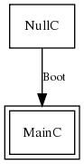

Null is an empty skeleton application. It is useful to test that the build environment is functional in its most minimal sense, i.e., you can correctly compile an application. It is also useful to test the minimum power consumption of a node when it has absolutely no interrupts or resources active.
